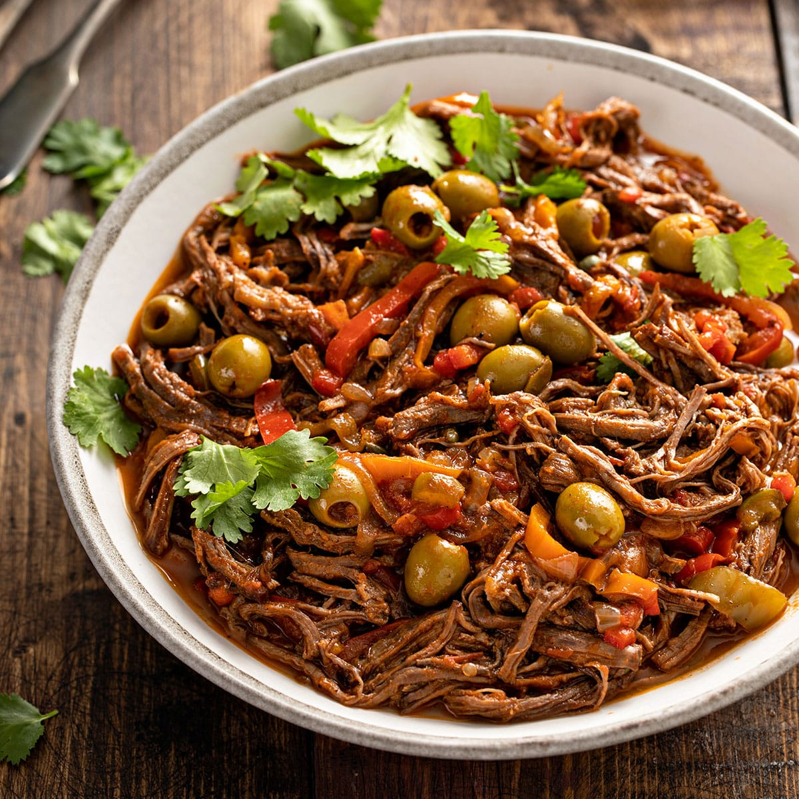

Cuban Ropa Vieja

This ropa vieja is great served on tortillas or over rice. Add sour cream, cheese, and fresh cilantro on the side.
Ingredients for Cuban Ropa Vieja
- 1 tablespoon vegetable oil
- 2 pounds beef flank steak
- 1 cup beef broth
- 1 (8 ounce) can tomato sauce
- 1 (6 ounce) can tomato paste
- 1 green bell pepper, seeded and sliced into strips
- 1 small onion, sliced
- 2 cloves garlic, chopped
- 1 teaspoon ground cumin
- 1 teaspoon chopped fresh cilantro
- 1 tablespoon olive oil
- 1 tablespoon white vinegar
Steps
- Heat vegetable oil in a large skillet over medium-high heat. Add flank steak and cook until browned, about 4 minutes per side.
:max_bytes(150000):strip_icc():format(webp)/79301-cuban-ropa-vieja-step1-002-1-194816dfcb43423b95b39559deb780d4.jpg)
- Transfer steak to a slow cooker; pour in beef broth and tomato sauce. Add tomato paste, bell pepper, onion, garlic, cumin, cilantro, olive oil, and vinegar; stir until well blended.
:max_bytes(150000):strip_icc():format(webp)/79301-cuban-ropa-vieja-step2-006-1-73be168bcb204c4e87c51b7f3e958261.jpg)
- Cover and cook on Low for up to 10 hours, or on High for 4 hours.
:max_bytes(150000):strip_icc():format(webp)/79301-cuban-ropa-vieja-step3-145-1-985a9591fd784eb38f4ee11a4262a198.jpg)
- Shred steak in the slow cooker with two forks.
:max_bytes(150000):strip_icc():format(webp)/79301-cuban-ropa-vieja-DDMFS-4x3-0daa8085c6cd4423981002ffae990fb1.jpg)